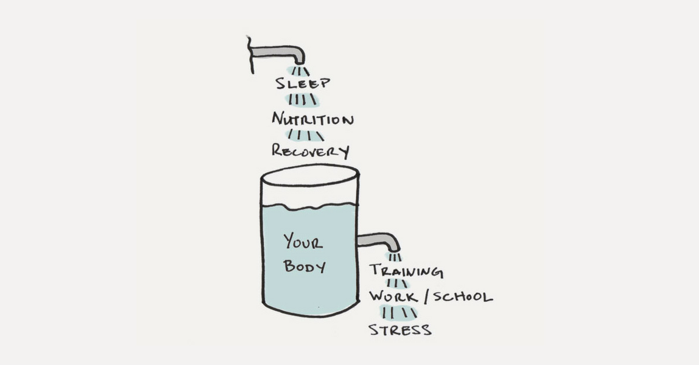

The Science of Sleep
How to Sleep Better Every Night

If you want to learn how to sleep better, then you're in the right place. This guide will walk you through everything you need to know if you want to get better sleep. I'll explain the science of sleep and how it works, discuss why many people suffer from sleep deprivation without knowing it, and offer practical tips for getting better sleep and having more energy.
Plain and simple, the purpose of this guide is to explain the science of how to sleep better. You can click the links below to jump to a particular section or simply scroll down to read everything. At the end of this page, you’ll find a complete list of all the articles I have written on sleep.
I. The Science of Sleep

Sleep is one of the strangest things we do each day. The average adult will spend 36 percent of his or her life asleep. For one-third of our time on earth, we transition from the vibrant, thoughtful, active organisms we are during the day and power down into a quiet state of hibernation.
But what is sleep, exactly? Why is it so important and so restorative for our bodies and minds? How does it impact our lives when we are awake?
The Purpose of Sleep
Sleep serves multiple purposes that are essential to your brain and body. Let's break down some of the most important ones.
The first purpose of sleep is restoration.

Every day, your brain accumulates metabolic waste as it goes about its normal neural activities. While this is completely normal, too much accumulation of these waste products has been linked to neurological disorders such as Alzheimer's disease.
Alright, so how do we get rid of metabolic waste? Recent research has suggested that sleep plays a crucial role in cleaning out the brain each night. While these toxins can be flushed out during waking hours, researchers have found that clearance during sleep is as much as two-fold faster than during waking hours.
The way this process occurs is fairly remarkable:
During sleep, brain cells actually shrink by 60 percent, allowing the brain's waste-removal system—called the glymphatic system—to essentially “take out the trash” more easily. The result? Your brain is restored during sleep, and you wake up refreshed and with a clear mind.
The second purpose of sleep is memory consolidation.

Sleep is crucial for memory consolidation, which is the process that maintains and strengthens your long-term memories. Insufficient or fragmented sleep can hamper your ability to form both concrete memories (facts and figures) and emotional memories.
Finally, sleep is paramount for metabolic health.

Studies have shown that when you sleep 5.5 hours per night instead of 8.5 hours per night, a lower proportion of the energy you burn comes from fat, while more comes from carbohydrate and protein. This can predispose you to fat gain and muscle loss. Additionally, insufficient sleep or abnormal sleep cycles can lead to insulin insensitivity and metabolic syndrome, increasing your risk of diabetes and heart disease.
All of this to say, that better sleep is critical for your mental and physical health.
How Much Sleep Do You Need?

Alright, so sleep is important, but how much sleep do you really need? To answer that question, let's consider an experiment conducted by researchers at the University of Pennsylvania and Washington State University.
The researchers began the experiment by gathering 48 healthy men and women who had been averaging seven to eight hours of sleep per night. Then, they split these subjects into four groups. The first group had to stay up for 3 days straight without sleeping. The second group slept for 4 hours per night. The third group slept for 6 hours per night. And the fourth group slept for 8 hours per night. In these final three groups—4, 6, and 8 hours of sleep—the subjects were held to these sleep patterns for two weeks straight. Throughout the experiment the subjects were tested on their physical and mental performance.
Here's what happened…
The subjects who were allowed a full 8 hours of sleep displayed no cognitive decreases, attention lapses, or motor skill declines during the 14-day study. Meanwhile, the groups who received 4 hours and 6 hours of sleep steadily declined with each passing day. The four-hour group performed worst, but the six-hour group didn't fare much better. In particular, there were two notable findings.
First, sleep debt is a cumulative issue.
In the words of the researchers, sleep debt “has a neurobiological cost which accumulates over time.” After one week, 25 percent of the six-hour group was falling asleep at random times throughout the day. After two weeks, the six-hour group had performance deficits that were the same as if they had stayed up for two days straight. Let me repeat that: if you get 6 hours of sleep per night for two weeks straight, your mental and physical performance declines to the same level as if you had stayed awake for 48 hours straight.
Second, participants didn't notice their own performance declines.
When participants graded themselves, they believed that their performance declined for a few days and then tapered off. In reality, they were continuing to get worse with each day. In other words, we are poor judges of our own performance decreases even as we are going through them.
The Cost of Sleep Deprivation
The irony of it all is that many of us are suffering from sleep deprivation so that we can work more, but the drop in performance ruins any potential benefits of working additional hours.
In the United States alone, studies have estimated that sleep deprivation is costing businesses over $100 billion each year in lost efficiency and performance.
As Gregory Belenky, Director of the Sleep and Performance Research Center at Washington State University, puts it: “Unless you’re doing work that doesn’t require much thought, you are trading time awake at the expense of performance.”
And this brings us to the important question: At what point does sleep debt start accumulating? When do performance declines start adding up? According to a wide range of studies, the tipping point is usually around the 7 or 7.5 hour mark. Generally speaking, experts agree that 95 percent of adults need to sleep 7 to 9 hours each night to function optimally. Most adults should be aiming for eight hours per night. Children, teenagers, and older adults typically need even more.
Here's a useful analogy for why sleep is so important.
The Theory of Cumulative Stress
Imagine that your health and energy are a bucket of water. In your day-to-day life, there are things that fill your bucket up. Sleep is one of the main inputs. These are also things like nutrition, meditation, stretching, laughter, and other forms of recovery.
There are also forces that drain the water from your bucket. These are outputs like lifting weights or running, stress from work or school, relationship problems, or other forms of stress and anxiety.
The forces that drain your bucket aren't all negative, of course. To live a productive life, it can be important to have some of those things flowing out of your bucket. Working hard in the gym, at school, or at the office allows you to produce something of value. But even positive outputs are still outputs and they drain your energy accordingly.
These outputs are cumulative. Even a little leak can result in significant water loss over time.
Keeping Your Bucket Full
If you want to keep your bucket full, you have two options.
1. Refill your bucket on a regular basis. That means making time for sleep and recovery.
2. Let the stressors in your life accumulate and drain your bucket. Once you hit empty, your body will force you to rest through injury and illness
Recovery is not negotiable. You can either make time to rest and rejuvenate now or make time to be sick and injured later. Keep your bucket full.
Ok, But Can You Catch Up on Sleep?
Extra sleep can remedy some of the negative effects of several bad nights of sleep. New research found that catching up on sleep on the weekends brought daytime sleepiness and inflammation levels back to baseline; however, cognitive performance did NOT rebound.
What exactly does that mean? If you're not getting enough sleep during the week, you cannot depend on catch-up sleep on the weekends to restore your focus and attention. The only way to keep levels of those performance measures high is to make sure you're getting adequate sleep every night.
Now does this mean you shouldn't even try to catch up on sleep? No. If you're already sleep deprived, you should definitely try to get some extra sleep. But the best thing to do, both for immediate performance and for the long-term, is to prioritize sleep every night—not just on the weekends.